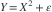
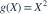
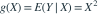
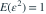

， 独立，，。在所有满足平方可积的 中，使 最小的预测函数及最小值为哪项？
独立，，。在所有满足平方可积的 中，使 最小的预测函数及最小值为哪项？

，其中 与 独立，，。在所有满足平方可积的 中，使 最小的预测函数及最小值为哪项？- A，最小值为

- B

，最小值为 - C，最小值为

- D，最小值为
我已思考，展开答案与解析
正确答案：B
- 平方损失下的最佳预测为

。 - 预测误差为 ，所以最小均方误差为

。
易错提醒最佳预测不意味着误差为零；独立噪声无法通过 X 预测。
原模拟卷 A · 模拟卷 A 第 22 题
原创